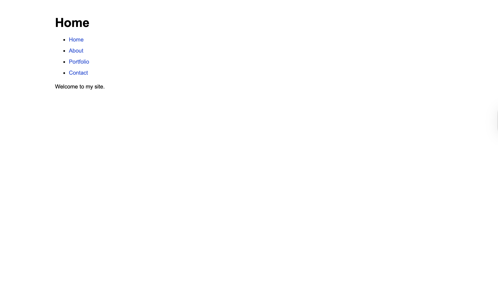
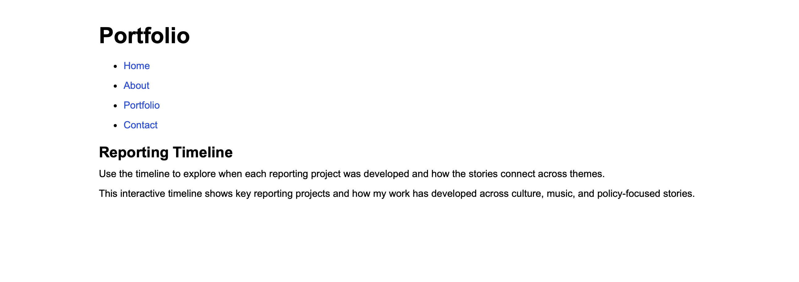
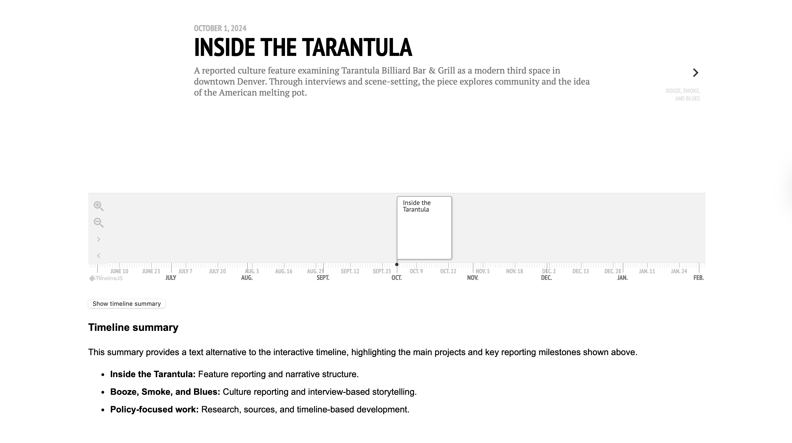

Personal Journalism Portfolio Website
This project is a responsive portfolio website designed to showcase reporting work, writing samples, and interactive storytelling. The site highlights journalism projects, including a timeline-based interactive story that documents the development of reporting projects over time.
Project Concept
The goal of this project was to build a simple, readable portfolio site that presents journalism work clearly while demonstrating fundamental front-end development skills. The intended audience includes editors, potential employers, and readers interested in long-form reporting. The design emphasizes clarity, strong hierarchy, and mobile-first layout so the content is easy to navigate across devices.
Screenshots
Homepage

Interior Page

Interactive Element

Tools Used
- HTML5
- CSS3
- JavaScript
- VS Code
- GitHub + GitHub Pages
- Chrome DevTools
- KnightLab TimelineJS
Reflection
Through this project I learned how to structure a multi-page website, implement responsive design using mobile-first principles, and manage a project using GitHub. I also learned how to embed interactive storytelling elements like TimelineJS and add small JavaScript interactions to improve usability. The biggest improvement came from establishing a simple design system using consistent spacing, typography, and reusable components across pages. This process helped transform the site from a basic layout into a more polished and coherent portfolio.